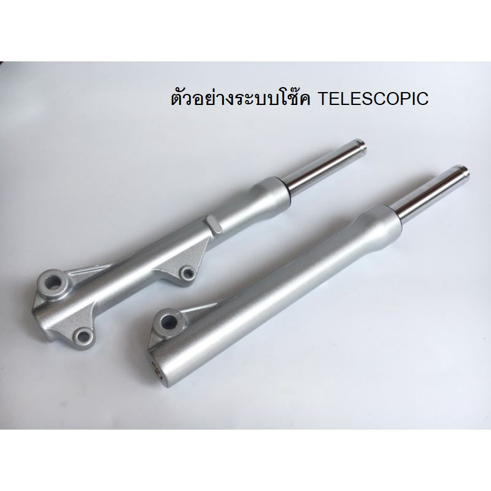
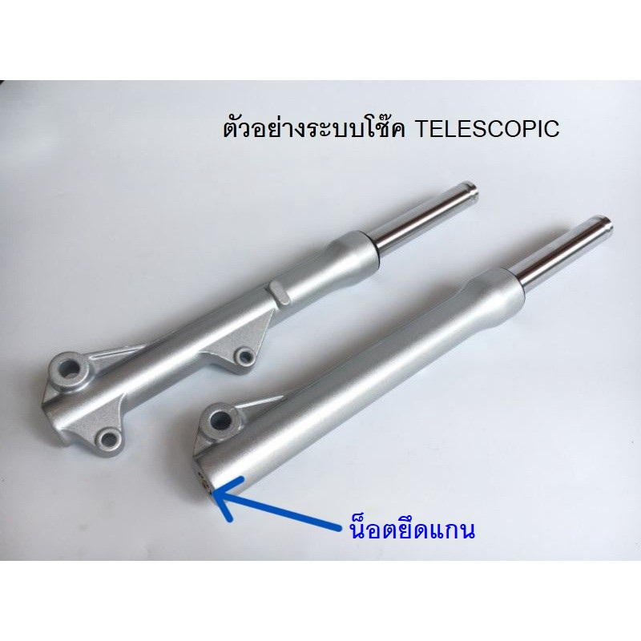
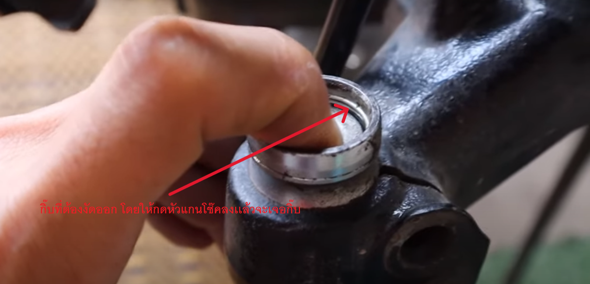

เทคนิคการเปลี่ยนซีลโช๊คหน้าTELESCOPIC+อัดน้ำมัน

ให้ผู้ซ่อมทำการถอดโช๊คออกมาตามภาพ เพื่อง่ายต่อการทำงานและทำงานได้ละเอียดยิ่งขึ้น
โดยการถอดปั๊มเบรค ถอดล้อ ในบางรุ่นอาจต้องถอดบังโคลนออก และจะเจอน๊อตยึดเเกนโช๊ค ขนาดM10 ข้างละ2ตัว ให้ทำการถอดเเละค่อยๆขยับดึงโช๊คออกมา
ให้ผู้ซ่อมทำการถอดน๊อตใต้กระบอกโช๊ต โดยส่วนมากที่เจอมักเป็นหัว6เหลี่ยมเบอร์5mm-6mmระวังน้ำมันทะลักให้หาถาดรองน้ำมันก่อนถอด

ให้ผู้ซ่อมทำการกดหัวแกนโช๊คเพื่องัดกิ๊บล็อคออก [กิ๊บหลุดเเล้วค่อยๆปล่อยนะครับระวังดีดใส่หน้า]

กิ๊บหลุดเเล้วให้ผู้ซ่อมทำการดึงแกนโช๊คออกมาได้เลย ซีลกันฝุ่น กิ๊บล็อคซีลน้ำมัน ซีลกันน้ำมัน เอาออกให้หมด เเละทำการล้างให้สะอาด

ให้ผู้ซ่อมทำการเช็คแกนโช๊ค ว่าสึก หรือเป็นรอย ช่วงซีลน้ำมัน ในระยะยุบขึ้นลงสุด หรือไม่ ถ้าแกนเป็นรอยขนาดที่มือลูบไปแล้วรู้สึกให้ทำการเปลี่ยนใหม่ได้เลย ถ้าไม่เปลี่ยนแกนผู้ซ่อมจะเปลี่ยนซีลอีกกี่คู่ก็รั่วครับ

มาถึงขั้นตอนประกอบ
ให้ผู้ซ่อม ทำการ อัดซีลน้ำมัน ลงกระบอกโช๊ค ระวังอย่าเอาอะไรเคาะโดนซีลเสียนะครับ ถ้าไม่มีเครื่องมืออัด ให้ทาจารบี ที่วงนอกและวงในของซีลน้ำมัน และค่อยๆดันเข้ากระบอกโช๊ค ดันเข้าตรงๆอย่าให้ซีลเอียง และเอาซีลตัวเก่าที่งัดออกล้างให้สะอาด วางทาบไปกับซีลตัวใหม่ แล้วค่อยๆเคาะ ไล่ไปจนสุด[เห็นร่องกิ๊บล็อคซีลน้ำมันโผล่] เมื่อสุดร่องเเล้วให้ผู้ซ่อมทำการใส่กิ๊บล็อคซีลน้ำมันให้เรียบร้อย และทำการไล่ประกอบอุปกรณ์ ที่อยู่ในโช๊คตามลำดับ โดยผู้เขียนจะลงเป็นรูปพาทอะไหล่ใว้ให้ผู้ซ่อมทำการเปรียบเทียบ

อัดซีลประกอบใส่แกนโช๊คเรียบร้อยเเล้วให้ผู้ซ่อมทำการ ขันน๊อตใต้กระบอกโช๊ค ระวังอย่าลืมแหวนทองแดงนะครับ เสร็จเเล้วให้ผู้ซ่อมทำการ ไล่เติมน้ำมันลงไปที่จุกเเกนโช๊ค ค่อยๆเติมอย่าพึ่งเติมเยอะ ขยับแกนขึ้นลงช้าๆเพื่อไล่อากาศจากด้านในจนหมด และทำการกดแกนลงให้สุดน้ำมันจะปริ่มพอดีคือน้ำมันเต็มพอดีเวลากดแกนโช๊คลงสุด แต่ผู้ซ่อมแนะนำให้เปิดService manual ดูดีที่สุด เราจะได้ค่าโรงงาน ไล่น้ำมันเสร็จเเล้วก็ปิดฝาล็อคกิ๊บให้เรียบร้อย ประกอบกลับ เป็นอันเสร็จ
ติดต่อสั่งอะไหล่ผ่านไลน์แอดมินหน้าเว็บได้เลยครับ